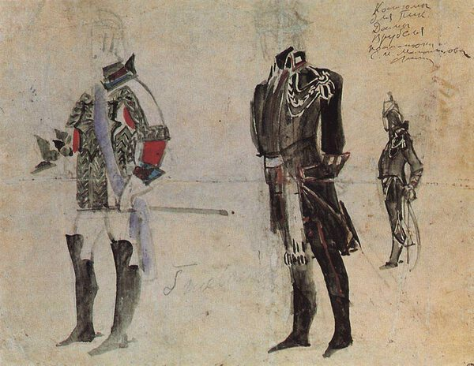

Mikhail Vrubel,1856 - 1910,Symbolism,Russian,"Mikhail Aleksandrovich Vrubel (Russian: Михаи́л Алекса́ндрович Вру́бель; March 17, 1856 – April 14, 1910, all n.s.) is usually regarded amongst the Russian painters of the Symbolist movement and of Art Nouveau. In reality, he deliberately stood aloof from contemporary art trends, so that the origin of his unusual manner should be sought in Late Byzantine and Early Renaissance painting.",http://en.wikipedia.org/wiki/Mikhail_Vrubel,171
